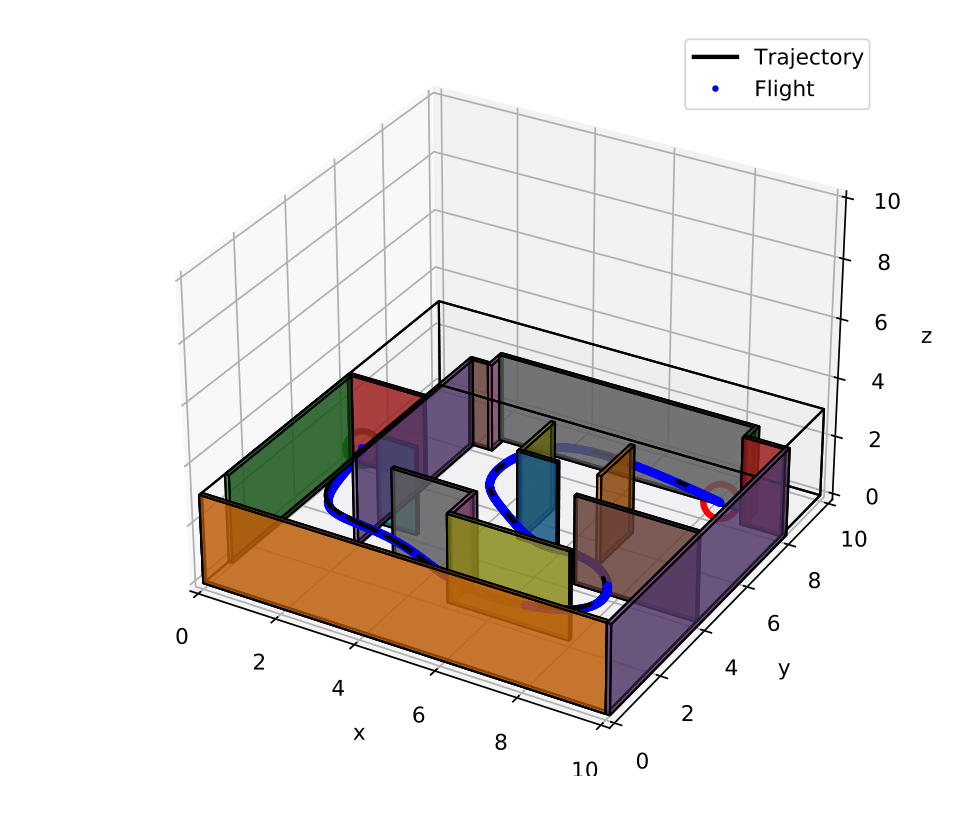
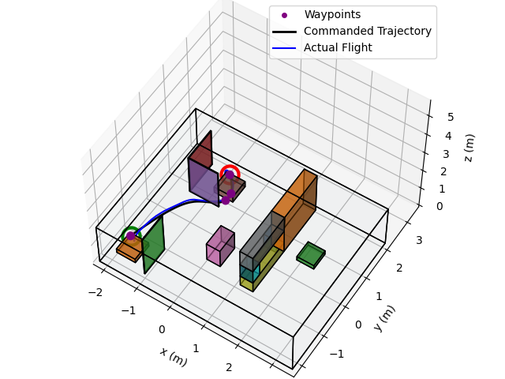
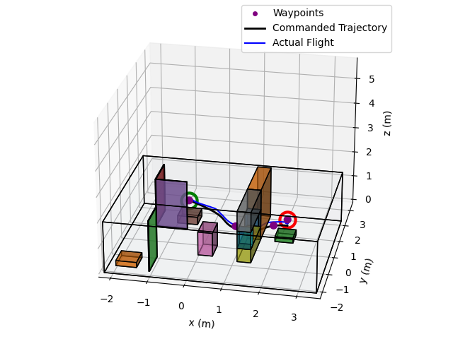
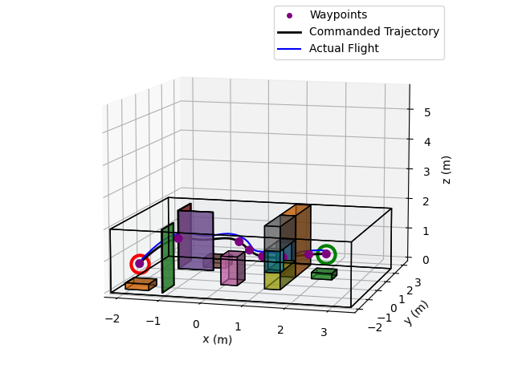
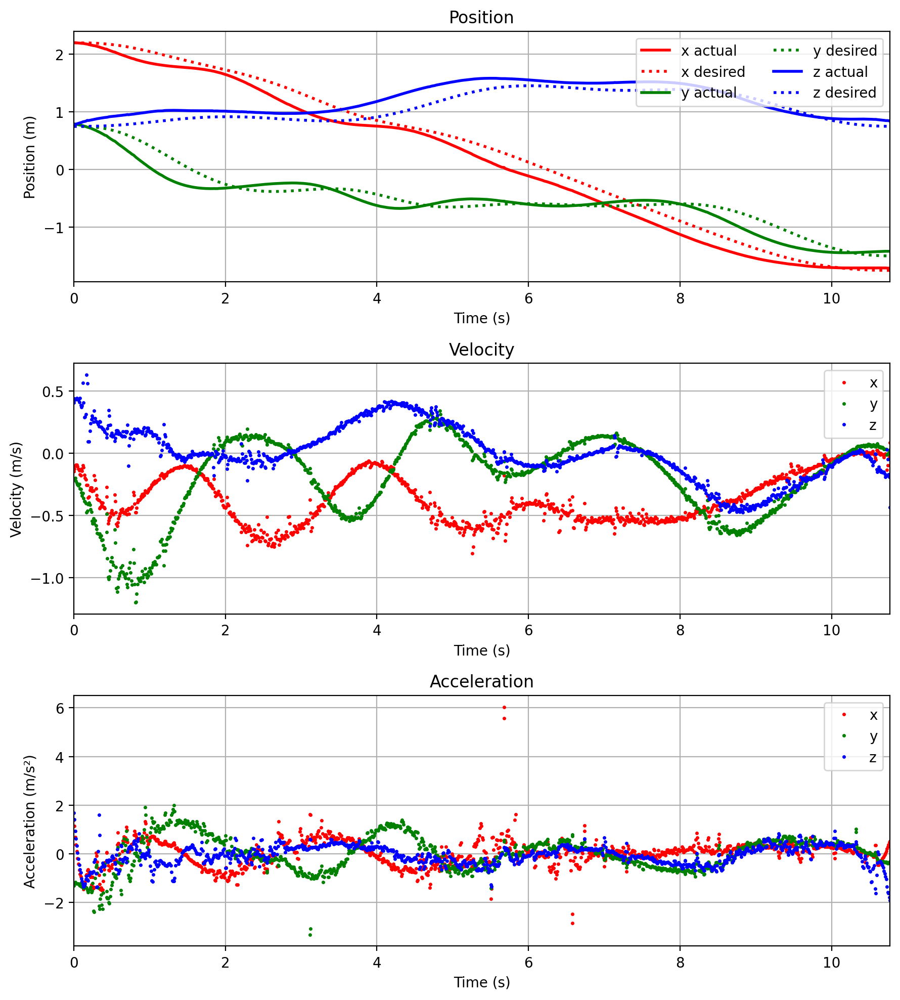
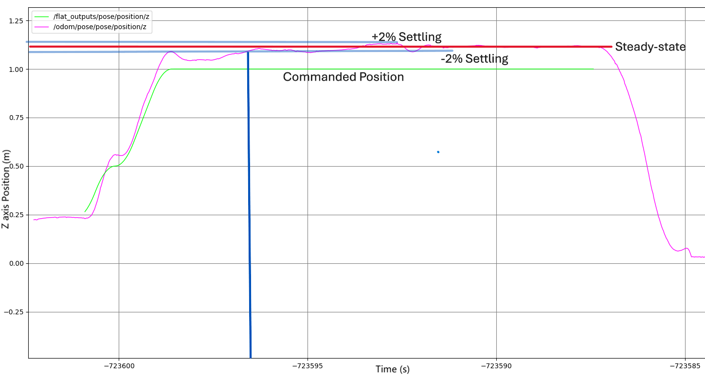

MEAM 6200 · University of Pennsylvania · Spring 2026
Quadrotor autonomy
From planned paths
to actual flight.
I worked on 3D planning, trajectory generation, feedback control, and state estimation across a team Crazyflie lab and an individual simulation project. The central challenge was making a collision-free route trackable—not just finding it.

Team 5 · Vicon feedback
Three maze environments
Individual project · Estimated-state feedback
Six main-task maps completed
Finite-range map updates · Guide-path local goals
Six extra-credit maps completed
01 / Hardware experiments
Flying the plan on a Crazyflie
In the hardware labs, our team deployed the planning and control pipeline on a Crazyflie 2.0. Vicon supplied state measurements to a lab desktop; the computer ran planning, trajectory generation, and control, then sent commands over radio. Flight data were recorded in rosbags.
We first tuned hover and waypoint tracking, then flew three known mazes. The final maze pipeline used A* on a 3D occupancy grid, collision-checked waypoint shortcutting, a quintic minimum-jerk trajectory, and geometric SE(3) feedback control. Yaw tracking was disabled in these experiments.






These are plots of recorded hardware flights, not newly generated simulations. Project 1 Phase 4 report, §§I–III ↗. Team 5: Sanghyub (Paul) Lee, Angelina Zhang, Parra Wang, and Tianyi Xia.
What the flight data showed
The three flights had consistent lateral tracking, while altitude error dominated the total error. The reported 3D RMSE ranged from 0.1208 to 0.1392 m.
| Maze | X | Y | Z | 3D |
|---|---|---|---|---|
| 1 | 0.0547 | 0.0503 | 0.1162 | 0.1380 |
| 2 | 0.0258 | 0.0356 | 0.1126 | 0.1208 |
| 3 | 0.0402 | 0.0574 | 0.1203 | 0.1392 |
Values reproduced from the hardware report, Table I ↗; not recomputed from raw logs.
The useful limitation: the altitude response settled above the command. The report discusses model or thrust bias, a possible reference-frame mismatch, and the absence of integral action; it does not isolate a single cause.


Controller tuning and the altitude step response
The gains that worked in the first lab needed retuning in the second. The team increased lateral damping and adjusted the altitude gains; the final hardware values were Kp = diag(4.5, 4.5, 11.0) and Kd = diag(3.0, 3.0, 5.5).


For the approximately 1.0 m altitude command, the report describes a measured steady state of about 1.10–1.12 m. Settling near that measured value is different from eliminating tracking error. Testing integral action was proposed as a next step, not demonstrated as a completed fix.
02 / Individual simulation project
Closing the loop with an estimated state
Project 3 brought my planning, control, and visual–inertial odometry (VIO) work into one simulator. Unlike the earlier true-state simulation, the controller now used the VIO estimate. Both estimation error and tracking error affected obstacle clearance.
Find a route
26-connected A* on an inflated 3D occupancy grid.
Reduce waypoints
Shortcutting and Ramer–Douglas–Peucker (RDP) simplification.
Build the reference
Polynomial motion or RDP-based segments, depending on the route.
Track with VIO
SE(3) feedback using the estimated vehicle state.
Why I kept two trajectory methods
Smooth polynomial references worked well where there was enough clearance. On window and switchback routes, RDP-based segments preserved the A* path geometry more reliably. A smoother-looking reference was not automatically the better choice.
The switchback failure that mattered
Increasing speed initially improved flight time but caused collisions at sharp turns. I adjusted the controller gains as well as the route construction. The final report describes completing switchback after tuning both—not after changing the path alone.
Project 3 report, §§1–2 ↗ and §4 ↗. The maze image at the top of this page is an original simulator result from this report.
03 / Extra-credit extension
Replanning with a limited local map
The extension replaced execution of one full global trajectory with repeated short plans. At each replan, the vehicle updated the occupancy map within its sensing range, selected a local goal, and generated a short reference from the current state.
Aiming directly toward the final goal was not enough in bent corridors. I used an initial coarse guide path to choose a goal farther along the route, with a monotonic progress variable so a folded path would not pull the planner back toward an already-passed segment.
Scope: local obstacle updates were range-limited, but the method still used a guide path computed at initialization. This is not a claim of navigation with no prior global guidance.
Implementation details
- Local goal selection
- Choose a short target on the guide; allow A* to snap an occupied target to a nearby free voxel.
- Segment timing
- Reset each new reference to its own start time, t − t0.
- Route-dependent settings
- Use separate margin, step-length, and speed settings for normal, vertical, and long folded routes.
Project 3 report, §3 ↗ and continued implementation details ↗.
04 / Reported simulation results
Six maps, two planning settings
Both versions completed all six evaluated maps. Local replanning took longer: shorter plans and repeated map updates traded flight time for operation with limited local obstacle information.
| Map | Main task Global planning | Extra credit Local replanning | Completion Main / local |
|---|---|---|---|
| Maze | 7.13 | 15.58 | Pass / pass |
| Over-under | 9.59 | 21.20 | Pass / pass |
| Window | 7.91 | 16.65 | Pass / pass |
| Slalom | 19.06 | 36.95 | Pass / pass |
| Stairwell | 10.77 | 22.60 | Pass / pass |
| Switchback | 19.78 | 48.42 | Pass / pass |
Reproduced from Table 1 ↗ and Table 2 ↗ in the Project 3 report. Reported course scores: 100/100 for the main task and 30/30 for extra credit, under its relaxed time limits. These are simulation results, separate from the hardware RMSE above.
What I took from the project
Planning, control, and estimation could not be tuned independently. Small margins and high speeds could fail once tracking and VIO errors were included; making the local planner too conservative could also lead to longer, less reliable flights.
The final settings were practical, map-dependent choices rather than a universal planner. Curvature- and clearance-aware time allocation was a possible next improvement, not part of the evaluated implementation.
Original work